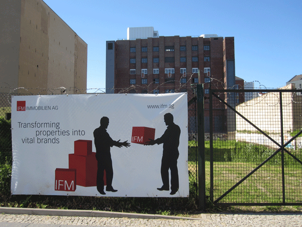
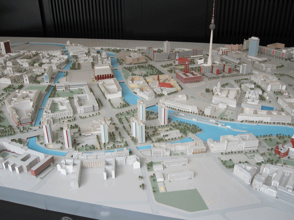
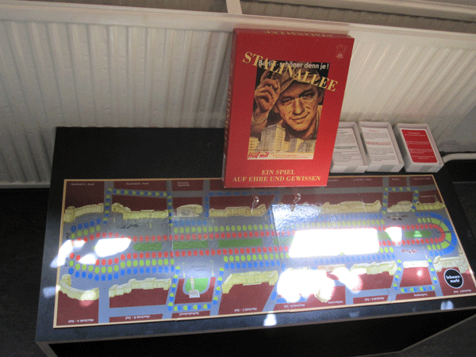
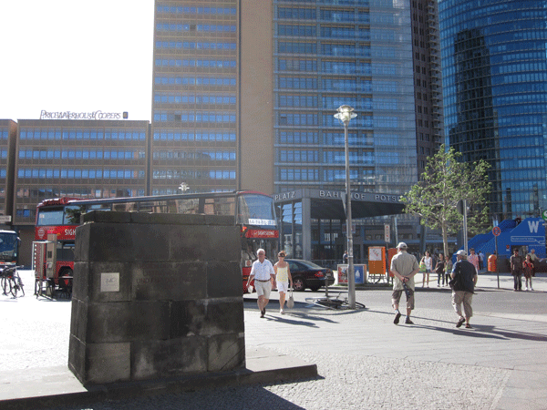

-
Shelf Life: Berlin at the End of History
by Greg Afinogenov July 16, 2010
photo: G. Afinogenov
1
As you make your way through the Neues Museum in Berlin, you will find yourself walking through a room—the Roter Saal—that seems somehow different from all the others. The hall is dedicated to prehistoric artifacts, but displays here have no friendly bilingual plaques to explain their historical provenance or context, and they are not arranged thematically or even chronologically; in fact, they seem to have no apparent order to them at all. Tools and pottery fragments seem to be piled one next to another on simple, utilitarian shelves, like disused power tools in a suburban garage. The room is large, and that makes it even more unsettling. What could it be doing here, in one of the Europe’s slickest museums?
Moving through the Roter Saal at the rapid pace which it seems to demand, you are likely to miss something important: in the frame of history, it isn’t really the room that’s strange. If anything, it’s the museum around it. The role it plays now—providing culturally-satisfying edutainment for tourists—was at best secondary a century or two ago. More important was the museum’s function as a storehouse for classical antiquities, collected around the world by royal Prussian and imperial German archaeologists. Piles of ancient treasure, enclosed in a suitably imposing neoclassical building, served as a graphic link between political and cultural authority. The Neues Museum was not, of course, alone in this regard. The institutions that surround it on the city’s Museum Island—all built during the nineteenth and early twentieth centuries—were integral components of the same project. The crown jewel being the Pergamon-Museum, which contains most of a gigantic Greek temple as well as the monumental Babylonian Ishtar Gate. Even more obvious, perhaps, is the Alte Nationalgalerie, whose enormous collections of mediocre nineteenth-century German realists and Romantics are totally inexplicable until one realizes how literally its name is supposed to be taken.
These buildings, of course, no longer exist in their old context. Today, they function as tourist destinations, as members of a long list of “sights”—from concentration camps to dance clubs—that visitors to Berlin are expected to see. Yet something in them remains unsettled: as the Roter Saal reminds us, they exist as spaces out of joint with their time, subsisting uneasily as links to moments that are not simply outdated but, in effect, unassimilable. They provide us with an opportunity to question not only how the city copes with such irruptions of anachronism, but also the conditions of their apparent necessity. We need these places, but we don’t know why.
2
On an upper floor in another of Berlin’s museums—the Märkisches, devoted to the city’s history—there is a strange polygonal contraption of dark wood that occupies half of a large room, periodically ringing and whirring. The machine is a stereoscope. Sitting down on one of the chairs surrounding it and looking through the binocular lenses that protrude from each of the sides, the visitor is treated to a sequence of three-dimensional photographs, some in color, of Berlin around the turn of the twentieth century. The effect is achieved very simply (the image presented to one eye differs slightly from the other), but it is a stunning illusion of depth.
Living as we do in the post-Avatar moment, it is easy to appreciate the 3-D technology of this bygone era. The photographs are truly lifelike; in one of them, a lower-class boy looks directly at the camera, and his accusatory stare locates us in the place of the photographer, whose boxy flashes and tripod legs we can glimpse in some of the other pictures. The realism of the street scenes is rendered even more uncanny by their familiarity: though the cars and outfits may be different, they feel viscerally recognizable in a sense that simple photographs from the period cannot convey.
The illusion is a slippery one, however. Many of the photographs are of military parades, coronations, and other state events, and their world remains almost totally unfamiliar no matter how real scenes seem. The pudgy Kaiser in his spiked helmet and the cavalry guards with their shakos belong, naturally, to a different time. But the buildings are even more alienating. It is one peculiarity of stereoscopic images that the people, though arranged and positioned in a three-dimensional space, seem insubstantial, like cardboard cutouts in a photorealist diorama. The same cannot be said of the buildings. In the pre-war, pre-Bauhaus moment of the Second Reich, in which Corinthian columns, massive domes, pediments, and arches remain necessary components of official architecture, the effect is of a city made for buildings rather than people. Or rather, perhaps, of a city of people made for buildings. Even the parades seem intended to underscore the parade-ground and not the other way around. Within the bowels of the stereoscope, in short, paper-thin shadows populate an urban space still dominated by the presence of imperial classicism.
photo: G. Afinogenov
It is in this respect that the stereoscope’s photographs hearken not towards the 3-D future of Avatar, but to the geometrically rigid, linear space of eighteenth-century painting, a collection of which hangs only a few rooms away. These are eighteenth-century views of Berlin, primarily of the axial avenue Unter den Linden and the squares in its immediate vicinity, the similarity to the stereoscopic photographs, though not immediately obvious, soon becomes apparent. Following the conventions of the genre, each view is filled with people: strolling aristocratic pairs, merchants going about their business, and so on. Once again, however, these inhabitants of the foreground are rendered insubstantial. Rarely looking forward, they are not furnished with any identifiable personalities and are, from view to view, entirely interchangeable. Again, the protagonists are the buildings themselves: blunt demonstrations of Berlin’s growing wealth and power, their columned authority is the raison d’être of the very paintings in which they are depicted. The lovingly rendered urban landscape, in the hands of these artists, is no place for people either.
These, then, are the outlines of the world in which Berlin’s classical museums once existed—a world where classicism, imperial ideology, and official culture combined to project the authority of the state over the urban space. Today, little heed is paid to the inherent authority of architecture: Berlin’s municipal authorities happily coat structures in scaffolding and then drape the scaffolding with ads. (When I was last there, a restaurant-style chalkboard stood in front of the mammoth portico of the Altes Museum, pointing inside and promising “coffee to go.”) It is in the street and with the pedestrians that authority now lies, because it is there and not in state-funded rotundas that the market can live. Yet there was also once a third alternative, which has itself become nearly incomprehensible to us today: the Berlin built and imagined by the DDR.
3
Less than a block from the Märkisches Museum is yet another museum, which contains twentieth-century scale models of central Berlin. There is rarely anything surprising about scale models, but the one built by the East German government in the 1980s is undoubtedly the most interesting. Unlike the larger model in the same room, it isn’t totally white, and comprehensiveness is not its overriding goal. Instead, as presented, it serves as a kind of self-enclosed, self-sustaining ideological justification for the DDR. The Fernsehturm TV tower (deliberately built, as any tour guide will tell you, to be slightly shorter than the Ostankino tower in Moscow), equipped with a baneful red LED reminiscent of nothing more than the Eye of Sauron, dominates the 1:500 landscape. It looks out over an idealized East Berlin in which the historic city center has merged harmoniously with socialist buildings, presented in a way that obscures shoddy construction and rapidly graying walls. Curiously, though, the old classicist edifices are not forgotten; indeed, they’re reproduced even more carefully than any of the new apartment blocks.
photo: G. Afinogenov
East German ideology understood the significance of such spaces more intimately than its Western counterpart. The Democratic Republic’s first major project was the 1949-‘51 construction of the Stalinallee (later renamed the Karl-Marx-Allee) in its half of Berlin; like its counterparts in the Soviet Union, it was executed as a grand boulevard in the nineteenth-century mold, with its apartment towers following the conservative stylistic codes of High Stalinist classicism. The attempt amounted to a strategic alliance between architecture, in full bloom under the Second and Third Reich, used to dominate public space and the traditional late-socialist obsession with massive projects oriented towards consumer goods, economic contentment, and the standard of living. DDR ideologists seem to have understood the link instinctively, and they worked hard to maintain that effect. The East Berliner who walked down the street to his apartment would be made to associate this coveted middle-class possession with the ideological claims made by its architecture. This was state classicism in the service of a fundamentally economic ideology; the very language of its construction suggested the filial piety of socialism to the Empire from which it inherited its style. This is almost impossible to reconstruct today: there are now so many stores in the lower levels, so many advertisements at human height, that the street as it was once envisioned is literally invisible.
photo: G. Afinogenov
Subsequent socialist decades brought new projects, not all of them with the same aesthetic, but the focus on Imperial history remained. Two of East Berlin’s largest cultural/construction programs in the last decade of its existence—the restoration of the eighteenth-century Gendarmenmarkt and the generously interpreted “reconstruction” of the medieval Nikolai Quarter in the city center—were deliberate gestures, efforts to stake a claim to the legitimate management of historically as well as politically-invested space. (The giant city model is another such demonstration.) A tourist attraction such as the new Gendarmenmarkt could not, in the East German understanding, be simply a tourist attraction, and that made it more similar to its imperial predecessor than it was different: despite the radically opposed content of their ideologies, both embodied them in structures invested in history and positioned outside and above the fabric of street life. The fall of the Berlin Wall, then, meant more than the end of a physical or a bureaucratic structure. With the city reunited, the authoritarian classicism that had once shaped it was swallowed up and submerged by the newly assertive street.
4
On Potsdamer Platz, which was once a bulldozed wasteland through which the Berlin Wall ran, there are now enormous glass skyscrapers. Built, it would seem, as a parody of socialist megalomania, the Sony Center encloses a space only slightly less alienating than the Wall itself. Everything is outsized, and what isn’t beyond the power of the eye to compass is certainly beyond the power of the wallet. Even the tourists look a little shellshocked.
In a corner of the square, however, there is a monument which looks peculiarly out of place. It is a simple fragment of smoke-darkened stone wall, bearing the inscription: “From this position, on May 1, 1916, Karl Liebknecht called for struggle against the imperialist war and for peace.” On top on the inscription there is a plaque, a little lighter and newer, that informs the visitor that it was put up in 1951, taken down in 1995, and restored “with commentary” in 2003. (The commentary, it seems, is the plaque itself.)
And then, of course, there is the Wall. Although it has been gone for twenty years, reminders of its existence are only becoming more insistent: it is painted redder in the tourist guidebooks, the souvenir stands are more obnoxious and omnipresent, the Checkpoint Charlie gimmicks are more inventive. Unlike the former Nazi buildings in Berlin, the Wall is not sequestered away behind glass as something to be memorialized at a safe distance. Instead, it is constantly resurrected as it is celebrated. Sections of Wall still stand along the tourist routes; on Potsdamer Platz a fake East German immigration officer will stamp your passport with an “official” DDR stamp; the only souvenirs on offer are pins and flags from the Soviet Bloc.
What possible motivation could there be to preserve the Liebknecht monument and the “authentic experience” of the Wall? It certainly is not serving any political end, for whatever these structures may represent, they have been drained of all political significance by their gleefully capitalistic tourist-trade context. Just like the Neues Museum, the old socialist sites are preserved as spaces out of joint, belonging to a world that cannot now be reconstituted. There are, perhaps, many explanations for each such act of preservation—a liberal hope for enlightenment, the hunt for tourist dollars, a simple unwillingness to disturb a historic site. But they are all representative, it appears, of something more fundamental: the inability to let go of history.
Nietzsche writes in The Dawn about the Romans, who built “with the ‘air of eternity’ in the back of their minds “We, who know only the ‘melancholy of ruins,’ can barely comprehend this very different melancholy of eternal buildings.” We, who once knew the melancholy of ruins so well, can no longer understand it like the Germans of Nietzsche’s day did: they, after all, were the ones who built so many dark, columned palaces to hold fragments of broken columns. We have given that up now—and what we have gotten in return is, in the end, something like his “melancholy of eternal buildings.”
photo: G. Afinogenov
History no longer has a direction: it moves neither towards imperial hegemony, as the various incarnations of the Reich imagined, nor towards communism. In that sense, Francis Fukuyama’s much-maligned argument about “the end of history” has turned out to be correct. Fukuyama thought history had ended because liberal democracy no longer had serious and powerful ideological antagonists; only dimly did he appreciate the ultimate implication of his argument, which is that liberal, capitalist democracy is no longer a serious and powerful ideological antagonist to itself. Seldom do we, or the Germans, invoke the utopian elements of capitalism or even of democracy any longer, and free-market absolutism, which represents the central utopian impulse of capitalism, has seen most of its intellectual defenders die off without credible issue. At this, perhaps the moment of its greatest strength, late capitalism resembles nothing so much as late socialism: a system too stubborn to die and too stupid to be reformed.
In a world such as this, it is little wonder that we spend so much effort polishing and reassembling these buildings—tombstones of an increasingly meaningless past. We feel the “melancholy of eternal buildings” because there is no longer any impulse to wipe the slate clean. The bare fact of a structure’s great age is sufficient to generate preservationist sympathy for it. (Even the anarchist squat Köpi has a ballroom that was once, supposedly, used by the SS—and this is a point of pride, not an excuse for renovation.) Having lost confidence in our present and feeling no compulsion to embrace the future, we collect endless reminders of the past, and our cities become pockmarked with its remains. Our buildings are eternal, and melancholy, because we can think of nothing else to do with them.
And yet, of course, we cannot bring the past to life. For us, the street is the city; it envelops and shelters us as we move through it, constantly reminding us that the purpose of our built environment is the facilitation of buying and selling. The buildings we encounter, no matter how grand or imposing they look, are always in dialogue with the street. They entice visitors, make claims to authority, coquettishly cover themselves with security; they do not command or dominate, as imperial classicism was once supposed to do. Despite all its anachronisms, therefore, Berlin is a city in which it is almost impossible to believe that anything other than our world ever really existed: the ghosts of the past are so feeble that we may as well have only imagined them. The Roter Saal still seems like a clear window into our culture—but this time, we are the artifacts on its shelves.

1 Comment
Reflections on the Evolution in Russia
[...] Russia of today, all ideologies are converted into their currency equivalent. When DDR memorabilia is sold on the streets of the former East Berlin, there is at least some recognition that a different [...]